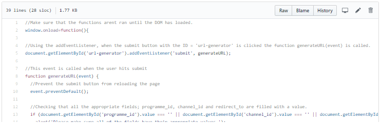

Small and Large tasks for module Professional Portfolio 2016
This page contains the work that was put into completing this module, for the small task, the large task and the development of this portfolio website. Each section will discuss why this task was chosen, what preperation was done, did I find it difficult and what would I do differently, also each section will contain a link to the relevent github repo
Cleversteam small task one
The small task involved writing some JavaScript that could take values inputted from the user and then output a URL based off what they entered. For example if a user entered in their channel and progamme ID into the input fields and hit submit. The correct URL for them would be printed onto their screen via a string for them to copy from. https://github.com/robertjparle/small_task_1

Cleversteam large task one
The small task involved writing some JavaScript that could take values inputted from the user and then output a URL based off what they entered. For example if a user entered in their channel and progamme ID into the input fields and hit submit. The correct URL for them would be printed onto their screen via a string for them to copy from. https://github.com/robertjparle/small_task_1
Developing this portfolio website
When developing the website, it was decided to use a User Centered Design approach, this way I would be able to cater for all the possible users of this website. It began with creating some user personas and use cases so that I could decide what needed to be on the website for it to be useable. Then I drew some low and medium fidelity protoypes to get some of my ideas from my mind onto paper. This way when it came to coding, I already had some visual ideas down to work from. https://github.com/robertjparle/small_task_1
How to contact me
There are many ways to contact me, feel free to do so whether it is concerning some of the work I have done, or if you have a question regarding something else entirely.
- My email address is at the top of every page.
- My linked in page is: https://www.linkedin.com/in/robert-parle-359967b0/
- For access to my CV, please email me directly and I will send one to you.